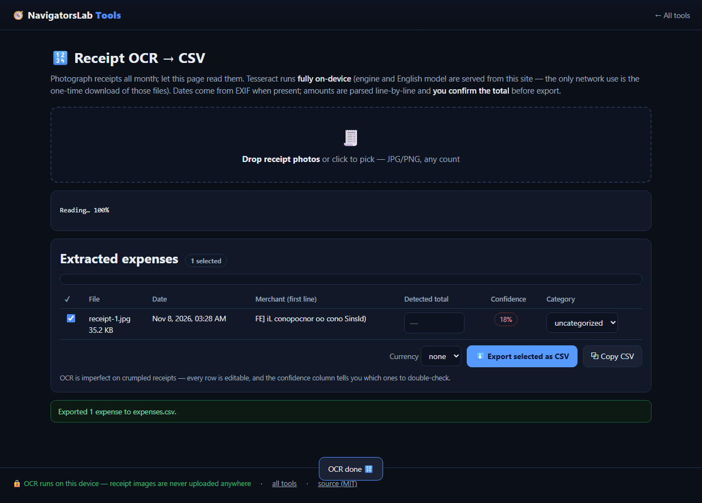

Receipt OCR → CSV
Read totals off receipt photos, export for expenses
🆓 free & open source (MIT)🔒 nothing is uploaded📶 works offline📱 mobile friendly
🔊 Narrated Step-by-Step Usage Tutorial Video (43s)
📖 Detailed Step-by-Step User Guide
Step 1: Drop Receipt Photos Into the Local OCR Dropzone · [OCR Dropzone (#dz)]Open `ocr.html` and drop one or more receipt images (`.jpg`, `.png`, `.webp`) onto `#dz`.✓ Result: The self-hosted Tesseract WebAssembly OCR engine initializes from the same origin.
Step 2: Watch On-Device Tesseract WASM Extract Text · [OCR Status Indicator (#stat)]Monitor `#stat` while Tesseract WASM scans each receipt image and runs heuristic parsers for merchant header lines, calendar dates, currency symbols, and `TOTAL` amounts.✓ Result: Structured expense rows populate the results table with an OCR confidence score.
Step 3: Review & Edit Any Low-Confidence Cells Inline · [Editable Results Table (#tbl)]Review `#tbl` inside `#resultsPanel`. Click any Date, Merchant, Category, Amount, or Currency cell to make inline corrections if thermal ink was faded.✓ Result: 100% verified structured expense rows ready for accounting import.
Step 4: Export to CSV or TSV for Excel & QuickBooks · [Export CSV Button (#csv)]Click **Export CSV (`#csv`)** to download `expenses.csv` (with columns `date,merchant,category,amount,currency,file,ocr_confidence`) or copy TSV to paste directly into a spreadsheet.✓ Result: Clean `expenses.csv` file saved locally with zero cloud OCR API fees.
🎛️ UI Controls & Shortcuts Reference
Receipt Dropzone (`#dz`)— Accepts single or batch receipt photos in JPEG, PNG, or WebP format.Editable Expense Table (`#tbl`)— Inline-editable cells for Date, Merchant, Category, Amount, and Currency with per-row OCR confidence.Export CSV (`#csv`)— Downloads RFC-4180 compliant `expenses.csv` ready for Excel, Numbers, Google Sheets, or QuickBooks.
💡 Pro Tips & Real-World Workflows
- If a receipt photo is skewed or has dark shadows, run it through **Scan & Screenshot Cleaner (`scan.html`)** with Grayscale + Contrast first to boost OCR accuracy above 95%.
- The ~24 MB Tesseract language model is fetched once from `navigatorslab.com` and cached by the PWA Service Worker for full offline use afterward.
- Always glance at rows where `ocr_confidence` is below 80%—crumpled thermal paper often blurs decimal points.
⚡ Concrete Example: Input → Engine → Output
1 · Raw Input
Photos of Coffee, Hardware & Grocery Receipts
Raw pixel images of printed store receipts ('GREEN GROCER ... TOTAL $23.98')
2 · On-Device Engine
Self-hosted Tesseract WebAssembly engine runs 100% locally in Worker; regex parser extracts Vendor, Date & Total
Runs locally under strict Content-Security-Policy with zero network uploads.
3 · Verified Output
expenses-2026.csv (Excel / Sheets Ready)
Structured rows: Date, Vendor ('GREEN GROCER'), Category ('Meals'), Amount ($23.98), Confidence ('94% High')
date,vendor,category,currency,total,confidence
2026-09-14,GREEN GROCER,Groceries,USD,23.98,94%

Receipt OCR → CSV mid-task — this demo runs entirely on this page's own GitHub Pages site.
What it does
- On-device OCR (no cloud): totals, dates and vendors parsed from receipt photos
- Editable rows with expense categories, currency and confidence flags
- Export CSV or TSV straight into Excel or Sheets
How it works
- Step 1. Drop receipt photos
- Step 2. On-device OCR fills vendor, date and total rows
- Step 3. Export the CSV for your spreadsheet
Private by design. Files are processed on your device and never
sent to any server. No accounts, no tracking, no cookies, nothing retained. Prefer the hub?
The same tool lives at https://navigatorslab.com/tools/ocr.html.
The suite: 24 projects, one zero-upload promise
🛡 Photo Privacy KitStrip GPS, camera model and timestamps before posting
🔐 Password Breach CheckerHas this password been breached? — it never leaves your tab
🔍 Metadata & Hidden-Data CheckerSee what's really inside a file — then strip it
🗜 Image ShrinkerHit “max 2 MB” portal limits without TinyPNG
📄 Scan & Screenshot CleanerPhone photos of documents → clean, straight PDFs
✍ Local E-Sign PadSign this lease tonight — not DocuSign
🧾 Receipts → One PDFShoebox of receipt photos → one date-sorted PDF
🔳 QR StudioGenerate QR codes and decode QR images — no site sees them
🎧 Audio TrimmerCut voice notes and clips on a waveform
🧮 Invoice / Quote GeneratorOne-person shops: hours in, clean PDF out
🗂 Batch Rename & SortIMG_5847.jpg → 2026-09-05-receipt-home-depot.jpg
🖨 Print-Shop PrepExact sizes, bleed, DPI checks, print-ready PDF
📑 PDF PagesReorder, rotate, delete and extract PDF pages
🔬 Text DiffCompare two texts with word-level highlights
🎨 ReimagineRedesign any HTML page from its own content
📊 Text StatsWords, reading time, readability, keyword density
📜 PDF StudioEdit the text inside your PDF — private, free, open source
🩺 Design Health18 deterministic design-quality checks for HTML — no LLM, no API key
🔪 Skill SliceCopy one Read-verified skill folder — a slice, not the pie
🕵 liecatchersYour agent said Done. Prove it — ten sensors, one RECEIPT.json
📚 Book Guide MCPShip improvements with your books — agents cite, run playbooks, learn
📡 Data InsightsFounder intelligence — daily & weekly tech signal briefs
🪓 Iron Axe: LegacyAn original side-scrolling beat 'em up — Godot 4